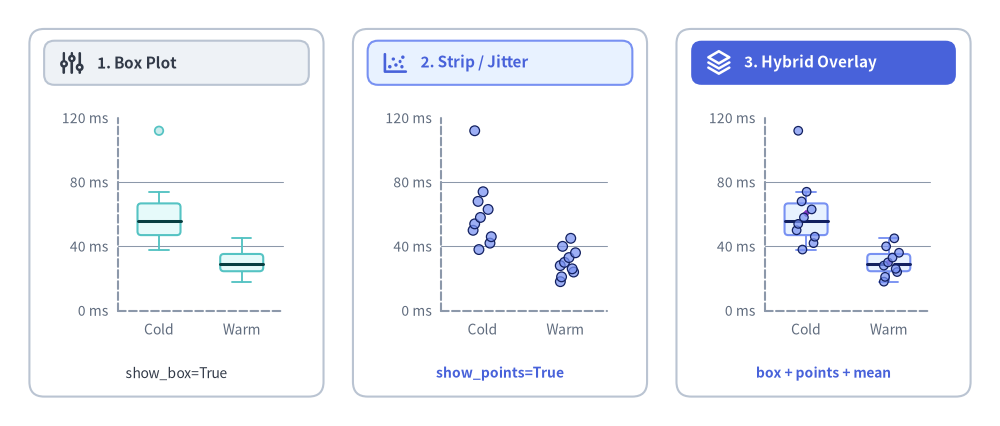
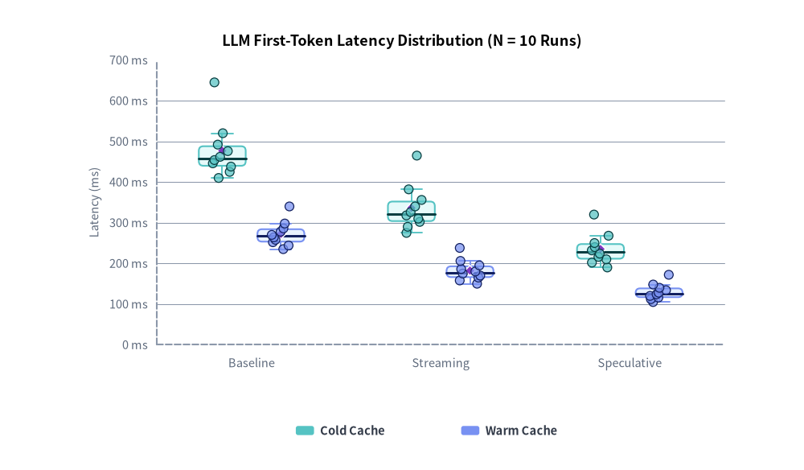
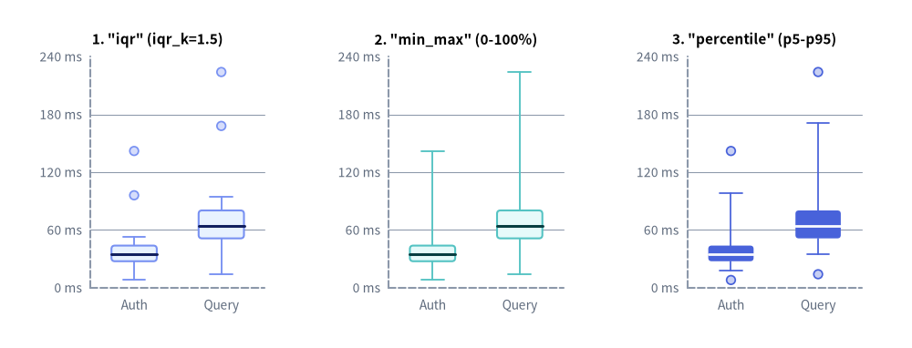
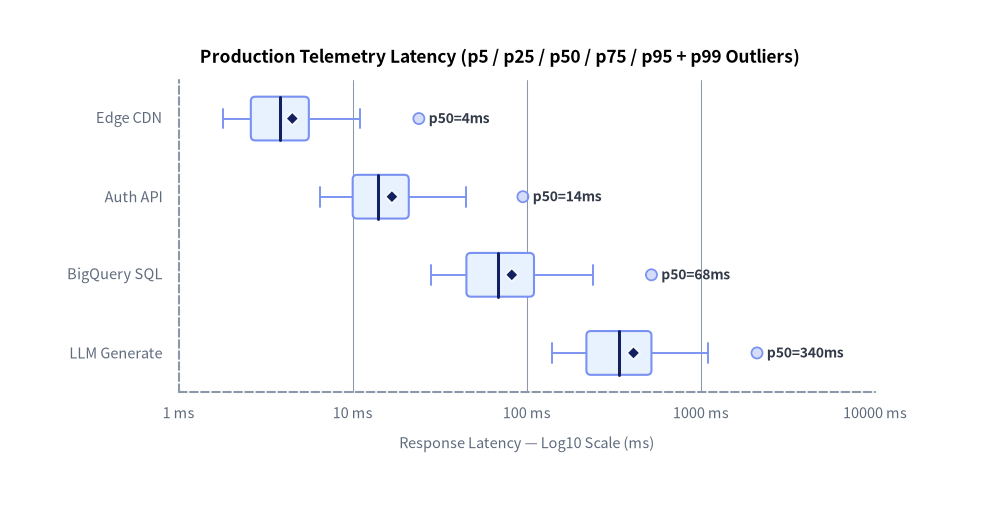

BoxChart: Box Plots, Strip Plots & Hybrid Overlays
BoxChart (drawlib.charts.box) visualizes categorical numerical distributions, quartiles, dispersion, and tail latency across three composable display modes—box plots, strip/jitter plots, and hybrid overlays—from either raw sample sequences or pre-aggregated BoxStats.

Source Code
from drawlib.canvas import save, setup
from drawlib.charts.box import BoxChart
from drawlib.icons import phosphor
from drawlib.shapes import rectangle
from drawlib.styles import Colors, Styles
from drawlib.text import text
setup(width=136, height=58)
cold_ms = [38, 42, 46, 50, 54, 58, 63, 68, 74, 112]
warm_ms = [18, 21, 24, 26, 28, 30, 33, 36, 40, 45]
card_style = Styles.Neutral.patch(shape_r=2.0, shape_line_color=Colors.Gray4, shape_fill_color=Colors.White)
for cx in (24.0, 68.0, 112.0):
rectangle((cx, 29.0), width=40.0, height=50.0, style=card_style)
# Card headers with Phosphor icons (2 neutral badges + 1 focal PrimaryFlat badge)
rectangle((24.0, 49.4), width=36.0, height=6.0, style=Styles.Neutral.patch(shape_r=1.4))
phosphor.sliders((9.8, 49.4), width=3.8, style=Styles.DarkBold)
text((13.2, 49.4), "1. Box Plot", style=Styles.DarkBold.patch(text_size=11.0, halign="left"))
rectangle((68.0, 49.4), width=36.0, height=6.0, style=Styles.PrimaryNeutral.patch(shape_r=1.4))
phosphor.chart_scatter((53.8, 49.4), width=3.8, style=Styles.PrimaryBold)
text((57.2, 49.4), "2. Strip / Jitter", style=Styles.PrimaryBold.patch(text_size=11.0, halign="left"))
rectangle((112.0, 49.4), width=36.0, height=6.0, style=Styles.PrimaryFlat.patch(shape_r=1.4))
phosphor.stack((97.8, 49.4), width=3.8, style=Styles.WhiteBold)
text((101.2, 49.4), "3. Hybrid Overlay", style=Styles.WhiteBold.patch(text_size=11.0, halign="left"))
# 1. Left: Box Plot (show_box=True, show_points=False)
c_box = BoxChart(
axis_line_style=Styles.MutedDashed,
categories=["Cold", "Warm"],
width=35.5,
height=34.5,
show_box=True,
show_points=False,
box_width_ratio=0.52,
box_r=0.5,
axis_text_style=Styles.Muted.patch(text_size=10.0),
grid_style=Styles.MutedThin,
)
c_box.add_series("Latency", [cold_ms, warm_ms], style=Styles.SecondaryNeutral)
c_box.configure_y_axis(min_value=0, max_value=120, tick_step=40, unit="ms")
c_box.draw(xy=(6.5, 10.2))
text((24.0, 7.2), "show_box=True", style=Styles.Dark.patch(text_size=10.0))
# 2. Center: Strip / Jitter Plot (show_box=False, show_points=True)
c_strip = BoxChart(
axis_line_style=Styles.MutedDashed,
categories=["Cold", "Warm"],
width=35.5,
height=34.5,
show_box=False,
show_points=True,
box_width_ratio=0.52,
jitter=0.48,
jitter_seed=42,
point_radius=0.66,
axis_text_style=Styles.Muted.patch(text_size=10.0),
grid_style=Styles.MutedThin,
)
c_strip.add_series("Latency", [cold_ms, warm_ms], style=Styles.PrimaryNeutral)
c_strip.configure_y_axis(min_value=0, max_value=120, tick_step=40, unit="ms")
c_strip.draw(xy=(50.5, 10.2))
text((68.0, 7.2), "show_points=True", style=Styles.PrimaryBold.patch(text_size=10.0))
# 3. Right: Box + Strip Hybrid Overlay (show_box=True, show_points=True, show_mean=True)
c_hybrid = BoxChart(
axis_line_style=Styles.MutedDashed,
categories=["Cold", "Warm"],
width=35.5,
height=34.5,
show_box=True,
show_points=True,
show_mean=True,
box_width_ratio=0.52,
box_r=0.5,
jitter=0.48,
jitter_seed=42,
point_radius=0.58,
axis_text_style=Styles.Muted.patch(text_size=10.0),
grid_style=Styles.MutedThin,
)
c_hybrid.add_series(
"Latency",
[cold_ms, warm_ms],
style=Styles.PrimaryNeutral,
mean_style=Styles.AccentFlat.patch(shape_line_color=Colors.White, shape_line_width=1.1),
)
c_hybrid.configure_y_axis(min_value=0, max_value=120, tick_step=40, unit="ms")
c_hybrid.draw(xy=(94.5, 10.2))
text((112.0, 7.2), "box + points + mean", style=Styles.PrimaryBold.patch(text_size=10.0))
save()
1. Three Display Modes: Box, Strip, and Hybrid Overlay
Unlike traditional plotting libraries that split box-and-whisker summaries and jittered strip plots into separate chart classes, BoxChart unifies statistical quartiles and individual sample markers through two composable boolean flags—show_box and show_points—at either the chart level or per series on add_series(...):
| Mode | show_box |
show_points |
Visual Behavior & Best Use Case |
|---|---|---|---|
| Box Plot (default) | True |
False |
Draws Q1–Q3 interquartile boxes, median strokes, T-cap whiskers, and isolated outlier markers (show_outliers=True). Ideal for large samples ($N \ge 30$) and multi-series comparisons. |
| Strip / Jitter Plot | False |
True |
Draws every raw sample point with deterministic transverse jitter (jitter=0.45, or jitter=0.0 for a 1D aligned strip). Ideal when sample count is small ($N < 15$) and quartiles alone would hide clustering. |
| Box + Strip Hybrid Overlay | True |
True |
Overlays raw sample markers directly atop Q1–Q3 boxes and whiskers while automatically suppressing duplicate outlier circles. Ideal for $N = 5 \sim 30$ engineering benchmarks and PoC evaluations. |
Deterministic Jitter & Mean Markers ($N = 10$ Benchmark)
When plotting raw samples in strip or hybrid mode, BoxChart computes transverse jitter offsets via isolated 32-bit prime mixing keyed by (jitter_seed, series_idx, category_idx):
- 100% Git-Deterministic: Identical inputs and
jitter_seed=42produce byte-identical coordinates across machines and Python processes. - Animation-Safe Isolation: Hiding a series (
series.show = False) during progressive slide builds or animations never perturbs the jitter positions of neighboring series. - Arithmetic Mean Overlay (
show_mean=True): Draws a contrasting rhombus marker (mean_shape="rhombus") alongside the median line so skewed tail latencies are immediately visible when the mean pulls away from the median.
from drawlib.canvas import save, setup
from drawlib.charts.box import BoxChart
from drawlib.styles import Colors, Styles
setup(width=106, height=62)
chart = BoxChart(
axis_line_style=Styles.MutedDashed,
categories=["Baseline", "Streaming", "Speculative"],
width=92.0,
height=48.0,
show_box=True,
show_points=True,
show_mean=True,
box_width_ratio=0.62,
box_r=0.6,
jitter=0.44,
jitter_seed=42,
point_radius=0.58,
axis_text_style=Styles.Muted.patch(text_size=10.5),
grid_style=Styles.MutedThin,
title="LLM First-Token Latency Distribution (N = 10 Runs)",
title_style=Styles.BlackBold.patch(text_size=13.0),
)
mean_badge = Styles.AccentFlat.patch(shape_line_color=Colors.White, shape_line_width=1.1)
chart.add_series(
"Cold Cache",
[
[410, 425, 438, 446, 454, 462, 476, 492, 520, 645],
[275, 290, 302, 310, 318, 326, 340, 356, 382, 465],
[190, 202, 210, 216, 224, 232, 240, 250, 268, 320],
],
style=Styles.SecondaryNeutral,
mean_style=mean_badge,
)
chart.add_series(
"Warm Cache",
[
[235, 244, 252, 258, 264, 270, 278, 286, 298, 340],
[150, 158, 165, 170, 175, 180, 186, 195, 206, 238],
[105, 112, 116, 120, 124, 128, 134, 140, 148, 172],
],
style=Styles.PrimaryNeutral,
mean_style=mean_badge,
)
chart.configure_y_axis(min_value=0, max_value=700, tick_step=100, unit="ms", label="Latency (ms)")
chart.draw(xy=(7.0, 11.0))
chart.draw_legend(
xy=(39.0, 5.2),
text_style=Styles.DarkBold.patch(text_size=10.5),
orientation="horizontal",
item_gap=6.0,
)
save()

2. Whisker Modes (iqr, min_max, percentile) & Outlier Control
When raw numerical sequences (Sequence[float]) are passed to add_series(...), BoxChart computes inclusive linear-interpolated quartiles (q1, median, q3) and determines lower/upper whisker endpoints (min, max) and outliers according to whisker_mode:
whisker_mode="iqr"(default): Applies standard Tukey fences $[Q_1 - k \cdot \text{IQR},\ Q_3 + k \cdot \text{IQR}]$ where $\text{IQR} = Q_3 - Q_1$ andiqr_k=1.5. Whiskers snap to the furthest observed inlier samples inside the fences, and any values outside are plotted as individual outlier markers (show_outliers=True,outlier_shape="circle").whisker_mode="min_max": Extends whiskers across the full0%–100%observed sample range (min(values)tomax(values)), producing no separate outlier markers.whisker_mode="percentile": Places whisker caps directly atwhisker_percentiles=(low_p, high_p)(default(5.0, 95.0)forp5–p95, clamped to enclose[q1, q3]), isolating extreme bottom/top tail spikes outside that percentile band as outliers.
Side-by-Side Whisker Rule Comparison
The example below feeds the exact same 20-sample skewed API latency dataset (containing fast cache hits at 8–14 ms and tail spikes up to 224 ms) into all three whisker modes on locked 0–240 ms vertical axes:
from drawlib.canvas import save, setup
from drawlib.charts.box import BoxChart
from drawlib.styles import Styles
setup(width=136, height=52)
auth_ms = [8, 18, 22, 24, 26, 28, 29, 31, 32, 34, 35, 37, 39, 41, 43, 46, 49, 53, 96, 142]
query_ms = [14, 36, 42, 46, 49, 52, 55, 58, 60, 63, 65, 68, 72, 75, 79, 84, 88, 94, 168, 224]
configs = [
('1. "iqr" (iqr_k=1.5)', "iqr", Styles.PrimaryNeutral, 4.0),
('2. "min_max" (0-100%)', "min_max", Styles.SecondaryNeutral, 48.5),
('3. "percentile" (p5-p95)', "percentile", Styles.PrimaryFlat, 93.0),
]
for title, mode, series_style, x0 in configs:
chart = BoxChart(
axis_line_style=Styles.MutedDashed,
categories=["Auth", "Query"],
width=39.0,
height=45.0,
whisker_mode=mode,
iqr_k=1.5,
whisker_percentiles=(5.0, 95.0),
box_width_ratio=0.52,
cap_width_ratio=0.50,
box_r=0.5,
point_radius=0.65,
outlier_shape="circle",
axis_text_style=Styles.Muted.patch(text_size=10.0),
grid_style=Styles.MutedThin,
title=title,
title_style=Styles.BlackBold.patch(text_size=11.0),
)
chart.add_series("API", [auth_ms, query_ms], style=series_style)
chart.configure_y_axis(min_value=0, max_value=240, tick_step=60, unit="ms")
chart.draw(xy=(x0, 3.5))
save()

3. Pre-Aggregated BoxStats & Logarithmic Tail-Latency Scales
Production observability stores—such as BigQuery (APPROX_QUANTILES), Cloud Monitoring, and Prometheus histograms—typically export pre-computed quantile summaries (p5, p25, p50, p75, p95, mean, and p99 spikes) over millions of requests rather than raw arrays.
Pass BoxStats instances directly inside add_series(...) (freely mixing BoxStats, raw Sequence[float], or None / [] for empty slots). For service latencies spanning multiple orders of magnitude (2 ms edge cache hits to 1,500+ ms vector or LLM tail spikes), pair orientation="horizontal" with a base-10 logarithmic value axis (configure_x_axis(scale="log", ...)):
from drawlib.canvas import save, setup
from drawlib.charts.box import BoxChart, BoxStats
from drawlib.styles import Styles
setup(width=112, height=58)
chart = BoxChart(
axis_line_style=Styles.MutedDashed,
categories=["Edge CDN", "Auth API", "BigQuery SQL", "LLM Generate"],
orientation="horizontal",
width=98.0,
height=49.5,
show_mean=True,
box_width_ratio=0.56,
box_r=0.5,
point_radius=0.62,
axis_text_style=Styles.Muted.patch(text_size=10.5),
grid_style=Styles.MutedThin,
value_text_style=Styles.DarkBold.patch(text_size=10.0),
value_format="p50={:.0f}ms",
title="Production Telemetry Latency (p5 / p25 / p50 / p75 / p95 + p99 Outliers)",
title_style=Styles.BlackBold.patch(text_size=12.5),
)
chart.add_series(
"Prod SLA",
[
BoxStats(min=1.8, q1=2.6, median=3.8, q3=5.6, max=11.0, mean=4.5, outliers=[24.0]),
BoxStats(min=6.5, q1=10.0, median=14.0, q3=21.0, max=45.0, mean=16.8, outliers=[95.0]),
BoxStats(min=28.0, q1=45.0, median=68.0, q3=110.0, max=240.0, mean=82.0, outliers=[520.0]),
BoxStats(min=140.0, q1=220.0, median=340.0, q3=520.0, max=1100.0, mean=410.0, outliers=[2100.0]),
],
style=Styles.PrimaryNeutral,
)
chart.configure_x_axis(
scale="log",
min_value=1,
max_value=10000,
ticks=[1, 10, 100, 1000, 10000],
unit="ms",
label="Response Latency — Log10 Scale (ms)",
)
chart.draw(xy=(7.0, 4.5))
save()

4. Constructor & Method Reference Summary
BoxChart Constructor
All BoxChart constructor arguments are keyword-only (*):
from drawlib.charts.box import (
Axis,
BoxChart,
BoxStats,
DrawDirection,
FormatterType,
LegendPosition,
Orientation,
PointShape,
ScaleType,
Series,
WhiskerMode,
)
| Parameter | Type | Default | Description |
|---|---|---|---|
axis_line_style |
Style |
Required | Mandatory style anchor for the Cartesian axis baselines. |
width / height |
float |
68.0 / 44.0 |
Total bounding container dimensions on the canvas (> 0.0). |
categories |
list[str] | None |
None |
Ordered category labels along the categorical axis. |
orientation |
Orientation |
"vertical" |
"vertical" (categories on X, values on Y) or "horizontal" (categories on Y, values on X). |
show_box |
bool |
True |
Default visibility of Q1–Q3 boxes, whiskers, T-caps, and median lines. |
show_points |
bool |
False |
Default visibility of jittered strip sample markers (at least one of show_box or show_points must be True). |
show_outliers |
bool |
True |
Default visibility of outlier markers when show_box=True and show_points=False. |
show_mean |
bool |
False |
Default visibility of arithmetic mean markers. |
whisker_mode |
WhiskerMode |
"iqr" |
Raw-sample whisker rule: "iqr", "min_max", or "percentile". |
iqr_k |
float |
1.5 |
Non-negative IQR fence multiplier used when whisker_mode="iqr". |
whisker_percentiles |
tuple[float, float] |
(5.0, 95.0) |
(low_p, high_p) percentiles in [0.0, 100.0] (low < high) when whisker_mode="percentile". |
box_width_ratio |
float |
0.65 |
Fraction of each category slot occupied by the grouped box cluster ((0.0, 1.0]). |
cap_width_ratio |
float |
0.45 |
Fraction of individual box thickness occupied by whisker T-caps ([0.0, 1.0]; 0.0 hides caps). |
box_r |
float |
0.0 |
Corner rounding radius applied to Q1–Q3 boxes (>= 0.0). |
jitter |
float |
0.45 |
Normalized transverse spread ratio for strip points ([0.0, 1.0]; 0.0 aligns points on center). |
jitter_seed |
int |
42 |
Deterministic seed for prime-mixed per-slot strip jitter offsets. |
point_radius |
float |
0.58 |
Default marker radius for strip, outlier, and mean markers (> 0.0). |
point_shape |
PointShape |
"circle" |
Default strip marker shape ("circle", "square", "rhombus", "triangle", "none"). |
outlier_shape |
PointShape |
"circle" |
Marker shape for outlier points. |
mean_shape |
PointShape |
"rhombus" |
Marker shape for arithmetic mean points. |
axis_text_style |
Style | None |
None |
Style for tick labels, category names, and default axis titles (None omits labels). |
grid_style |
Style | None |
None |
Style for background value gridlines (None omits gridlines). |
value_text_style |
Style | None |
None |
Style for inline median value labels placed past the upper tip (None omits value labels). |
value_format |
FormatterType |
None |
Format string (e.g. "{:.1f}ms") or Callable[[float], str] for inline median labels. |
background_style |
Style | None |
None |
Style for the outer chart background card (None omits card). |
title / title_style |
str / Style | None |
"" / None |
Top chart title text and typography style (both required to render title). |
Series Registration & Rendering Methods (add_series, draw, draw_legend)
| Method / Property | Signature & Key Parameters | Description |
|---|---|---|
add_series |
(name: str, data: Sequence[BoxStats | Sequence[float] | None], style: Style, legend_text_style: Style | None = None, *, show_box=None, show_points=None, show_outliers=None, show_mean=None, median_style=None, whisker_style=None, point_style=None, outlier_style=None, mean_style=None, point_radius=None, point_shape=None, jitter=None, show=True, draw_ratio=1.0, draw_direction=None) -> Series |
Registers a distribution series (auto-deriving high-contrast median, whisker, and marker styles from style unless overridden) and returns the mutable Series. |
configure_x_axis / configure_y_axis |
(scale=None, min_value=None, max_value=None, ticks=None, tick_step=None, format=None, unit=None, label=None, show_grid=None, grid_style=None, show_axis_line=None, line_style=None, show_ticks=None, tick_label_style=None) -> Axis |
Configures linear or "log" scaling, bounds, ticks, units, and axis titles. See Axes, Scales & Legends. |
draw |
(xy: tuple[float, float] = (0.0, 0.0), *, width: float | None = None, height: float | None = None, align: Literal["bottom_left", "center"] = "bottom_left", scale: float = 1.0) -> None |
Renders the chart anchored at xy ("bottom_left" by default or "center"), with optional temporary size overrides and proportional scale. |
draw_legend |
(xy: tuple[float, float], text_style: Style, orientation: Orientation = "vertical", swatch_width: float = 2.4, swatch_height: float = 1.2, item_gap: float = 4.0, *, scale: float = 1.0) -> None |
Renders the decoupled series legend at xy (see Axes, Scales & Legends). |
get_size |
() -> tuple[float, float] |
Returns (width, height) of the chart container. |
value_axis / category_axis |
Axis (properties) |
Orientation-aware accessors: value_axis resolves to y_axis when vertical and x_axis when horizontal (series, x_axis, and y_axis are also exposed). |
BoxStats Data Model & Helper Methods
BoxStats is a strict Pydantic model (extra="forbid") enforcing monotonic quantile order (min <= q1 <= median <= q3 <= max):
| Field / Classmethod | Type | Default | Description |
|---|---|---|---|
min |
float |
Required | Lower whisker endpoint (e.g. sample minimum, lower Tukey fence, or p5). |
q1 |
float |
Required | First quartile (25th percentile). |
median |
float |
Required | Median value (50th percentile). |
q3 |
float |
Required | Third quartile (75th percentile). |
max |
float |
Required | Upper whisker endpoint (e.g. sample maximum, upper Tukey fence, or p95). |
mean |
float | None |
None |
Optional arithmetic mean rendered when show_mean=True. |
outliers |
list[float] |
[] |
Outlier values beyond [min, max] rendered when show_box=True and show_points=False. |
points |
list[float] |
[] |
Optional raw sample values rendered when show_points=True (required if show_box=False, show_points=True). |
BoxStats.from_values(...) |
(values: Sequence[float], *, whisker_mode: WhiskerMode = "iqr", iqr_k: float = 1.5, whisker_percentiles: tuple[float, float] = (5.0, 95.0)) -> BoxStats |
Classmethod | Computes a complete BoxStats summary (including mean, outliers, and points) from raw numerical samples. |
For shared axis formatting, logarithmic tick rules, and multi-chart canvas composition, see Charts Overview and Axes, Scales & Legends.